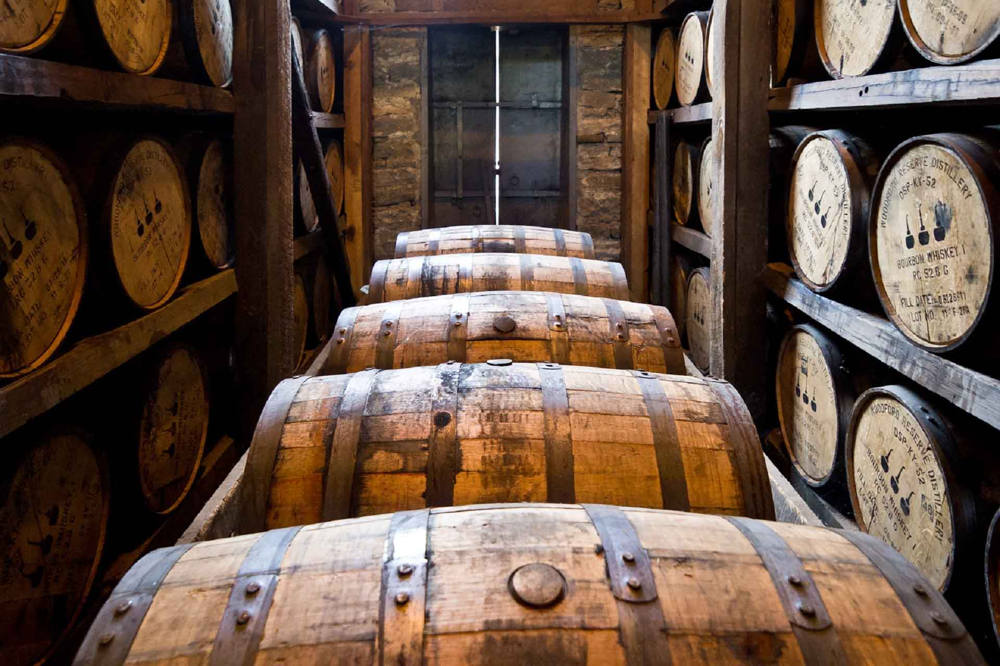

En cada botella de Sureño, destilamos tradición, pasión y el sabor de lo auténtico, para que cada momento se convierta en una experiencia única.

Nuestra Historia
Desde 1980, Sureño ha sido sinónimo de calidad y tradición. Ubicados al sur de Quito, trabajamos con dedicación para ofrecer licores excepcionales que combinan el arte artesanal con los más altos estándares de producción.
Nuestros Valores
- Calidad: Garantizamos un producto excepcional en cada botella.
- Tradición: Respetamos las técnicas artesanales en cada proceso.
- Innovación: Creamos nuevas experiencias para nuestros clientes.
- Compromiso: Apoyamos la producción local y sostenible.
Nuestros Productos
Ofrecemos una variedad de bebidas espirituosas:
- Vinos: Elegantes y de sabor refinado.
- Whisky: Perfectamente añejados.
- Vodka: Destilados con pureza excepcional.
- Aguardiente: Tradicional y auténtico.